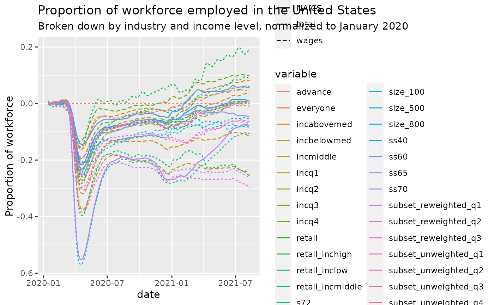

R/econ_tracker_employment.R
econ_tracker_employment.RdNumber of active employees, aggregating information from multiple data providers. This series is based on firm-level payroll data from Paychex and Intuit, worker-level data on employment and earnings from Earnin, and firm-level timesheet data from Kronos.
econ_tracker_employment_city_data()
econ_tracker_employment_county_data()
econ_tracker_employment_state_data()
econ_tracker_employment_national_data()a data.table with geographic details and a variable column with the following values representing the reported value:
emp_combined: Employment level for all workers.
emp_combined_inclow: Employment level for workers in the bottom quartile of the income distribution (incomes approximately under $27,000).
emp_combined_incmiddle: Employment level for workers in the middle two quartiles of the income distribution (incomes approximately $27,000 to $60,000).
emp_combined_inchigh: Employment level for workers in the top quartile of the income distribution (incomes approximately over $60,000).
emp_combined_ss40: Employment level for workers in trade, transportation and utilities (NAICS supersector 40).
emp_combined_ss60: Employment level for workers in professional and business services (NAICS supersector 60).
emp_combined_ss65: Employment level for workers in education and health services (NAICS supersector 65).
emp_combined_ss70: Employment level for workers in leisure and hospitality (NAICS supersector 70).
Data Sources: Paychex, Intuit, Earnin, Kronos
Breakdowns are by:
High Income (wage greater than $60,000 per year)
Middle Income (wage between $27,000 per year and $60,000 per year)
Low Income (wage less than $27,000 per year)
Professional and Business Services
Education and Health Services
Retail and Transportation
Leisure and Hospitality
For low income workers, the change in employment is calculated using Paychex and Earnin data. For medium and high income workers, the change in employment is calculated using Paychex and Intuit data.
In order to provide closer to real time data, we forecast the most recent employment measures beyond those available in the combined Earnin, Intuit, and Paychex dataset alone. To do so, we leverage two sources of higher frequency data: Kronos timestamp data and the Paychex weekly pay cycle sample. Using this higher frequency data we forecast more recent changes in employment using a distributed lag model, constructed by regressing a given week’s employment measure on the corresponding week’s Kronos measure, as well as its current and 3 previous lagged weeks’ Paychex weekly pay cycle measure. For more details, please refer to the appendix of the accompanying paper
Other data-import:
acaps_government_measures_data(),
acaps_secondary_impact_data(),
apple_mobility_data(),
beoutbreakprepared_data(),
cci_us_vaccine_data(),
cdc_aggregated_projections(),
cdc_excess_deaths(),
cdc_social_vulnerability_index(),
coronadatascraper_data(),
coronanet_government_response_data(),
cov_glue_lineage_data(),
cov_glue_newick_data(),
cov_glue_snp_lineage(),
covidtracker_data(),
descartes_mobility_data(),
ecdc_data(),
econ_tracker_consumer_spending,
econ_tracker_unemp_data,
economist_excess_deaths(),
financial_times_excess_deaths(),
google_mobility_data(),
government_policy_timeline(),
jhu_data(),
jhu_us_data(),
kff_icu_beds(),
nytimes_county_data(),
oecd_unemployment_data(),
owid_data(),
param_estimates_published(),
test_and_trace_data(),
us_county_geo_details(),
us_county_health_rankings(),
us_healthcare_capacity(),
us_hospital_details(),
us_state_distancing_policy(),
usa_facts_data(),
who_cases()
Other economics:
acaps_secondary_impact_data(),
econ_tracker_consumer_spending,
econ_tracker_unemp_data,
us_county_health_rankings()
res = econ_tracker_employment_city_data()
res
#> cityid cityname stateabbrev statename statefips lat lon
#> 1: 1 Los Angeles CA California 00006 34.05 -118.24
#> 2: 1 Los Angeles CA California 00006 34.05 -118.24
#> 3: 1 Los Angeles CA California 00006 34.05 -118.24
#> 4: 1 Los Angeles CA California 00006 34.05 -118.24
#> 5: 1 Los Angeles CA California 00006 34.05 -118.24
#> ---
#> 243796: 53 Tulsa OK Oklahoma 00040 36.15 -95.99
#> 243797: 53 Tulsa OK Oklahoma 00040 36.15 -95.99
#> 243798: 53 Tulsa OK Oklahoma 00040 36.15 -95.99
#> 243799: 53 Tulsa OK Oklahoma 00040 36.15 -95.99
#> 243800: 53 Tulsa OK Oklahoma 00040 36.15 -95.99
#> city_pop2019 date variable value variable_type
#> 1: 10039107 2020-01-14 everyone -1.29e-03 total
#> 2: 10039107 2020-01-15 everyone -5.18e-05 total
#> 3: 10039107 2020-01-16 everyone 1.04e-03 total
#> 4: 10039107 2020-01-17 everyone 1.95e-03 total
#> 5: 10039107 2020-01-18 everyone 2.63e-03 total
#> ---
#> 243796: 651552 2021-08-06 incabovemed -4.74e-03 wages
#> 243797: 651552 2021-08-07 incabovemed -4.37e-03 wages
#> 243798: 651552 2021-08-08 incabovemed -3.92e-03 wages
#> 243799: 651552 2021-08-09 incabovemed -3.42e-03 wages
#> 243800: 651552 2021-08-10 incabovemed -2.90e-03 wages
res = econ_tracker_employment_county_data()
res
#> countyfips countyname cityid cityname cz czname statename
#> 1: 01001 Autauga NA 11101 Montgomery Alabama
#> 2: 01001 Autauga NA 11101 Montgomery Alabama
#> 3: 01001 Autauga NA 11101 Montgomery Alabama
#> 4: 01001 Autauga NA 11101 Montgomery Alabama
#> 5: 01001 Autauga NA 11101 Montgomery Alabama
#> ---
#> 13758596: 56045 Weston NA 34601 Gillette Wyoming
#> 13758597: 56045 Weston NA 34601 Gillette Wyoming
#> 13758598: 56045 Weston NA 34601 Gillette Wyoming
#> 13758599: 56045 Weston NA 34601 Gillette Wyoming
#> 13758600: 56045 Weston NA 34601 Gillette Wyoming
#> statefips stateabbrev county_pop2019 date variable value
#> 1: 00001 AL 55869 2020-01-14 everyone NA
#> 2: 00001 AL 55869 2020-01-15 everyone NA
#> 3: 00001 AL 55869 2020-01-16 everyone NA
#> 4: 00001 AL 55869 2020-01-17 everyone NA
#> 5: 00001 AL 55869 2020-01-18 everyone NA
#> ---
#> 13758596: 00056 WY 6927 2021-08-06 incabovemed NA
#> 13758597: 00056 WY 6927 2021-08-07 incabovemed NA
#> 13758598: 00056 WY 6927 2021-08-08 incabovemed NA
#> 13758599: 00056 WY 6927 2021-08-09 incabovemed NA
#> 13758600: 00056 WY 6927 2021-08-10 incabovemed NA
#> variable_type
#> 1: total
#> 2: total
#> 3: total
#> 4: total
#> 5: total
#> ---
#> 13758596: wages
#> 13758597: wages
#> 13758598: wages
#> 13758599: wages
#> 13758600: wages
res = econ_tracker_employment_state_data()
res
#> statefips statename stateabbrev state_pop2019 date variable
#> 1: 00001 Alabama AL 4903185 2020-01-14 everyone
#> 2: 00001 Alabama AL 4903185 2020-01-15 everyone
#> 3: 00001 Alabama AL 4903185 2020-01-16 everyone
#> 4: 00001 Alabama AL 4903185 2020-01-17 everyone
#> 5: 00001 Alabama AL 4903185 2020-01-18 everyone
#> ---
#> 351896: 00056 Wyoming WY 578759 2021-08-06 ss70
#> 351897: 00056 Wyoming WY 578759 2021-08-07 ss70
#> 351898: 00056 Wyoming WY 578759 2021-08-08 ss70
#> 351899: 00056 Wyoming WY 578759 2021-08-09 ss70
#> 351900: 00056 Wyoming WY 578759 2021-08-10 ss70
#> value variable_type
#> 1: -0.00371 total
#> 2: -0.00334 total
#> 3: -0.00285 total
#> 4: -0.00229 total
#> 5: -0.00177 total
#> ---
#> 351896: -0.00824 NAICS
#> 351897: -0.01090 NAICS
#> 351898: -0.01360 NAICS
#> 351899: -0.01650 NAICS
#> 351900: -0.01950 NAICS
res = econ_tracker_employment_national_data()
res
#> date variable value variable_type
#> 1: 2020-01-14 everyone -0.001090 total
#> 2: 2020-01-15 everyone -0.000671 total
#> 3: 2020-01-16 everyone -0.000244 total
#> 4: 2020-01-17 everyone 0.000155 total
#> 5: 2020-01-18 everyone 0.000492 total
#> ---
#> 16671: 2021-08-06 advance 0.000000 total
#> 16672: 2021-08-07 advance 0.000000 total
#> 16673: 2021-08-08 advance 0.000000 total
#> 16674: 2021-08-09 advance 0.000000 total
#> 16675: 2021-08-10 advance 0.000000 total
library(ggplot2)
ggplot(res, aes(x=date,y=value,color=variable,lty=variable_type)) +
geom_line() +
ggtitle('Proportion of workforce employed in the United States',
subtitle='Broken down by industry and income level, normalized to January 2020') +
ylab('Proportion of workforce')
